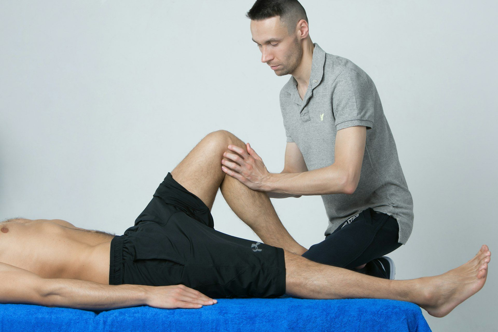

01
01Clínica médica
Avaliações de saúde de rotina, check-ups, cuidados preventivos, acompanhamento de doenças crônicas e suporte contínuo. Também oferecemos consulta popular.
Saiba maisCategorias de tratamento
Saiba mais sobre nossas principais categorias de serviços e descubra o ponto de partida ideal para sua jornada na área da saúde.
01Avaliações de saúde de rotina, check-ups, cuidados preventivos, acompanhamento de doenças crônicas e suporte contínuo. Também oferecemos consulta popular.
Saiba maisTratamentos estéticos personalizados, elaborados de acordo com seus objetivos, conforto e necessidades individuais.
Saiba mais
03Reabilitação de lesões, dores musculares e articulares, pós-operatório e melhora da mobilidade, com plano adaptado a cada paciente.
Saiba maisPlanejamento alimentar individualizado para saúde, bem-estar, controle de peso e performance, respeitando sua rotina.
Saiba maisCuidados na área da saúde mental, com acolhimento, escuta atenta e orientação individualizada.
Saiba maisAtendimento médico delicado e atencioso para crianças em fase de crescimento, com foco no desenvolvimento saudável e orientação para as famílias.
Saiba maisConsulta popular
Além das especialidades acima, a JF3 oferece consultas populares. Fale com a nossa equipe para conferir a disponibilidade.
Falar no WhatsApp